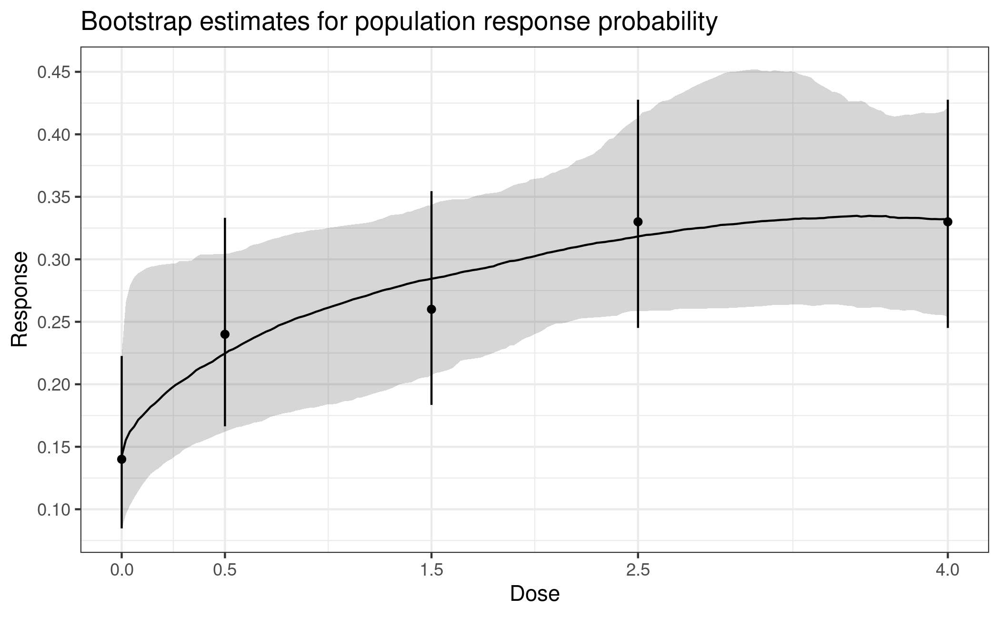

In this vignette we illustrate how to use the DoseFinding package with binary observations by fitting a first-stage GLM and applying the generalized MCP-Mod methodology to the resulting estimates. We also show how to deal with covariates.
For continuously distributed data see the corresponding vignette.
Background and data set
Assume a dose-finding study is planned for an hypothetical investigational treatment in atopic dermatitis, for the binary endpoint Investigator’s Global Assessment (IGA). The treatment is tested with doses 0, 0.5, 1.5, 2.5, 4. It is assumed the response rate for placebo will be around 10%, while the response rate for the top dose may be 35%. This is an example where the generalized MCP-Mod approach can be applied, i.e. dose-response testing and estimation will be performed on the logit scale.
We generate some example data in the setting just described. The 10%
placebo effect translates to -2.2 on the logit scale, and the asymptotic
effect of 25 percentage points above placebo becomes
logit(0.35) - logit(0.1), approximately 1.6.
library(DoseFinding)
library(ggplot2)
logit <- function(p) log(p / (1 - p))
inv_logit <- function(y) 1 / (1 + exp(-y))
doses <- c(0, 0.5, 1.5, 2.5, 4)
## set seed and ensure reproducibility across R versions
set.seed(1, kind = "Mersenne-Twister", sample.kind = "Rejection", normal.kind = "Inversion")
group_size <- 100
dose_vector <- rep(doses, each = group_size)
N <- length(dose_vector)
## generate covariates
x1 <- rnorm(N, 0, 1)
x2 <- factor(sample(c("A", "B"), N, replace = TRUE, prob = c(0.6, 0.4)))
## assume approximately logit(10%) placebo and logit(35%) asymptotic response with ED50=0.5
prob <- inv_logit(emax(dose_vector, -2.2, 1.6, 0.5) + 0.3 * x1 + 0.3 * (x2 == "B"))
dat <- data.frame(y = rbinom(N, 1, prob),
dose = dose_vector, x1 = x1, x2 = x2)Candidate models
We will use the following candidate set of models for the mean response on the logit scale:
mods <- Mods(emax = c(0.25, 1), sigEmax = rbind(c(1, 3), c(2.5, 4)), betaMod = c(1.1, 1.1),
placEff = logit(0.1), maxEff = logit(0.35)-logit(0.1),
doses = doses)
plotMods(mods)
## plot candidate models on probability scale
plotMods(mods, trafo = inv_logit)Analysis without covariates
First assume covariates had not been used in the analysis (not recommended in practice). Let \(\mu_k\) denote the logit response probability at dose \(k\), so that for patient \(j\) in group \(k\) we have
\[ \begin{aligned} Y_{kj} &\sim \mathrm{Bernoulli}(p_{kj}) \\ \mathrm{logit}(p_{kj}) &= \mu_{k} \end{aligned} \]
We perform the MCP-Mod test on the logit scale estimates \(\hat\mu=(\hat\mu_1,\dots,\hat\mu_K)\) and
their estimated covariance matrix \(\hat
S\). We can extract both from the object returned by the
glm() call.
fit_nocov <- glm(y~factor(dose) + 0, data = dat, family = binomial)
mu_hat <- coef(fit_nocov)
S_hat <- vcov(fit_nocov)
MCTtest(doses, mu_hat, S = S_hat, models = mods, type = "general")Multiple Contrast Test
Contrasts:
emax1 emax2 sigEmax1 sigEmax2 betaMod
0 -0.817 -0.641 -0.471 -0.280 -0.540
0.5 -0.126 -0.377 -0.589 -0.423 -0.356
1.5 0.202 0.103 0.163 -0.300 0.358
2.5 0.338 0.365 0.418 0.228 0.662
4 0.402 0.550 0.479 0.775 -0.124
Contrast Correlation:
emax1 emax2 sigEmax1 sigEmax2 betaMod
emax1 1.000 0.945 0.831 0.608 0.789
emax2 0.945 1.000 0.956 0.805 0.762
sigEmax1 0.831 0.956 1.000 0.804 0.788
sigEmax2 0.608 0.805 0.804 1.000 0.327
betaMod 0.789 0.762 0.788 0.327 1.000
Multiple Contrast Test:
t-Stat adj-p
emax2 3.378 0.00104
emax1 3.349 0.00103
sigEmax1 3.047 0.00305
sigEmax2 2.668 0.01108
betaMod 2.631 0.01169Dose-response modeling then can proceed with a combination of bootstrapping and model averaging. For detailed explanations refer to the vignette for analysis of continuous data.
one_bootstrap_prediction <- function(mu_hat, S_hat, doses, bounds, dose_seq) {
sim <- drop(mvtnorm::rmvnorm(1, mu_hat, S_hat))
fit <- lapply(c("emax", "sigEmax", "betaMod"), function(mod)
fitMod(doses, sim, model = mod, S = S_hat, type = "general", bnds = bounds[[mod]]))
index <- which.min(sapply(fit, gAIC))
pred <- predict(fit[[index]], doseSeq = dose_seq, predType = "ls-means")
return(pred)
}
## bs_predictions is a doses x replications matrix,
## probs is a 4-element vector of increasing probabilities for the quantiles
summarize_predictions <- function(bs_predictions, probs) {
stopifnot(length(probs) == 4)
med <- apply(bs_predictions, 1, median)
quants <- apply(bs_predictions, 1, quantile, probs = probs)
bs_df <- as.data.frame(cbind(med, t(quants)))
names(bs_df) <- c("median", "low_out", "low_in", "high_in", "high_out")
return(bs_df)
}
predict_and_plot <- function(mu_hat, S_hat, doses, dose_seq, n_rep) {
bs_rep <- replicate(
n_rep, one_bootstrap_prediction(mu_hat, S_hat, doses, defBnds(max(doses)), dose_seq))
bs_summary <- summarize_predictions(bs_rep, probs = c(0.025, 0.25, 0.75, 0.975))
bs_summary <- as.data.frame(inv_logit(bs_summary)) # back to probability scale
ci_half_width <- qnorm(0.975) * sqrt(diag(S_hat))
glm_summary <- data.frame(dose = doses, mu_hat = inv_logit(mu_hat),
low = inv_logit(mu_hat - ci_half_width),
high = inv_logit(mu_hat + ci_half_width))
gg <- ggplot(cbind(bs_summary, dose_seq = dose_seq)) + geom_line(aes(dose_seq, median)) +
geom_ribbon(aes(x = dose_seq, ymin = low_in, ymax = high_in), alpha = 0.2) +
geom_ribbon(aes(x = dose_seq, ymin = low_out, ymax = high_out), alpha = 0.2) +
geom_point(aes(dose, mu_hat), glm_summary) +
geom_errorbar(aes(dose, ymin = low, ymax = high), glm_summary, width = 0, alpha = 0.5) +
scale_y_continuous(breaks = seq(0, 1, 0.05)) +
xlab("Dose") + ylab("Response Probability") +
labs(title = "Bootstrap estimates for population response probability",
subtitle = "confidence levels 50% and 95%")
return(gg)
}
dose_seq <- seq(0, 4, length.out = 51)
predict_and_plot(mu_hat, S_hat, doses, dose_seq, 1000)
Analysis with covariates
In many situations there are important prognostic covariates (main effects) to adjust for in the analysis. Denote the vector of these additional covariates for patient \(j\) with \(x_{kj}\).
\[ \begin{aligned} Y_{kj} &\sim \mathrm{Bernoulli}(p_{kj}) \\ \mathrm{logit}(p_{kj}) &= \mu_k^d + x_{kj}^T\beta \end{aligned} \]
Fitting this model gives us estimated coefficients \(\hat\mu=(\hat\mu^d, \hat\beta)\) and an estimate \(\hat S\) of the covariance matrix of the estimator \(\hat\mu\).
In principle we could perform testing and estimation based on \(\hat\mu^d\) and the corresponding sub-matrix of \(\hat S\), but this would produce estimates for a patient with covariate vector \(\beta=0\), and not reflect the overall population.
To produce adjusted estimates per dose and to accommodate potential systematic differences in the covariates we predict the mean response probability at dose k for all observed values of the covariates and transform back to logit scale:
\[ \mu^*_k := \mathrm{logit}\biggl(\frac{1}{n} \sum_{i=1}^n \mathrm{logit}^{-1}(\hat\mu^d_k + x_{i}^T\hat\beta)\biggr) \]
Note here we index \(x\) with \(i\) that runs from 1 to \(n\) (all patients randomized in the study).
To obtain a variance estimate for \(\mu^*\) we repeat this with draws from \(\mathrm{MultivariateNormal}(\hat\mu, \hat S)\) and calculate the empirical covariance matrix \(S^*\) of theses draws.
Then we use \(\mu^*\) and \(S^*\) in MCTtest().
fit_cov <- glm(y~factor(dose) + 0 + x1 + x2, data = dat, family = binomial)
covariate_adjusted_estimates <- function(mu_hat, S_hat, formula_rhs, doses, other_covariates, n_sim) {
## predict every patient under *every* dose
oc_rep <- as.data.frame(lapply(other_covariates, function(col) rep(col, times = length(doses))))
d_rep <- rep(doses, each = nrow(other_covariates))
pdat <- cbind(oc_rep, dose = d_rep)
X <- model.matrix(formula_rhs, pdat)
## average on probability scale then backtransform to logit scale
mu_star <- logit(tapply(inv_logit(X %*% mu_hat), pdat$dose, mean))
## estimate covariance matrix of mu_star
pred <- replicate(n_sim, logit(tapply(inv_logit(X %*% drop(mvtnorm::rmvnorm(1, mu_hat, S_hat))),
pdat$dose, mean)))
return(list(mu_star = as.numeric(mu_star), S_star = cov(t(pred))))
}
ca <- covariate_adjusted_estimates(coef(fit_cov), vcov(fit_cov), ~factor(dose)+0+x1+x2,
doses, dat[, c("x1", "x2")], 1000)
MCTtest(doses, ca$mu_star, S = ca$S_star, type = "general", models = mods)Multiple Contrast Test
Contrasts:
emax1 emax2 sigEmax1 sigEmax2 betaMod
0 -0.828 -0.659 -0.494 -0.277 -0.551
0.5 -0.067 -0.317 -0.546 -0.369 -0.299
1.5 0.131 0.021 0.090 -0.372 0.315
2.5 0.384 0.412 0.470 0.251 0.694
4 0.381 0.543 0.480 0.766 -0.160
Contrast Correlation:
emax1 emax2 sigEmax1 sigEmax2 betaMod
emax1 1.000 0.945 0.829 0.598 0.785
emax2 0.945 1.000 0.954 0.799 0.750
sigEmax1 0.829 0.954 1.000 0.797 0.777
sigEmax2 0.598 0.799 0.797 1.000 0.299
betaMod 0.785 0.750 0.777 0.299 1.000
Multiple Contrast Test:
t-Stat adj-p
emax2 3.491 < 0.001
emax1 3.471 < 0.001
sigEmax1 3.115 0.00238
sigEmax2 2.749 0.00888
betaMod 2.639 0.01215In the case at hand the results here are not dramatically different. Adjusting for covariates gives slightly lower variance estimates.
ggplot(data.frame(dose = rep(doses, 4),
est = c(inv_logit(mu_hat), diag(S_hat), inv_logit(ca$mu_star), diag(ca$S_star)),
name = rep(rep(c("mean", "var"), each = length(doses)), times = 2),
a = rep(c(FALSE, TRUE), each = 2*length(doses)))) +
geom_point(aes(dose, est, color = a)) +
scale_color_discrete(name = "adjusted") +
facet_wrap(vars(name), scales = "free_y") + ylab("")Dose-response modelling proceeds in the same way as before, but now on the adjusted estimates.
predict_and_plot(ca$mu_star, ca$S_star, doses, dose_seq, 1000) +
labs(title = "Covariate adjusted bootstrap estimates for population response probability")Avoiding problems with complete seperation and 0 responders
In a number of situations it makes sense to replace ML estimation for
logistic regression via glm(..., family=binomial), with the
Firth logistic regression (see Heinze and Schemper 2002), implemented
as the logistf function from the logistf
package. This is particularly important for small sample size per dose
and if small number of responses are expected on some treatment arms.
The estimator of Firth regression corresponds to the posterior mode in a
Bayesian logistic regression model with Jeffrey’s prior on the parameter
vector. This estimator is well defined even in situations where the ML
estimate for logistic regression does not exist (e.g. for complete
separation).
Considerations around optimal contrasts at design stage and analysis stage
The formula for the optimal contrasts is given by \[ c^{\textrm{opt}} \propto S^{-1}\biggl(\mu^0_m - \frac{(\mu^0_m)^T S^{-1}1_K}{1_K^T S^{-1} 1_K}\biggr) \] where \(\mu^0_m\) is the standardized mean response, \(K\) is the number doses, and \(1_K\) is an all-ones vector of length \(K\) and \(S\) is the covariance matrix of the estimates at the doses (see Pinheiro et al. 2014).
For calculating the optimal contrast for the generalized MCP step the covariance matrix \(S\) of the estimator \(\hat\mu\) can be re-estimated once the trial data are available. With normally distributed data this is possible with decent accuracy even at rather low sample sizes. In the case of binary data, \(\hat\mu\) is on the logit scale and the diagonal elements of \(S\) are approximately \((np(1-p))^{-1}\), where \(n\) is the sample size of the dose group. This can be derived using the delta method. An estimate of this variance depends on the observed response rate and can thus be quite variable in particular for small sample sizes per group (e.g. smaller than 20).
A crude alternative in these situations is to not use the estimated \(S\) but a diagonal matrix with the inverse of the sample size per dose on the diagonal in the formula for calculation of the optimal contrast. The contrast calculated this way will asymptotically not be equal to the “optimal” contrast for the underlying model, but simulations show that they can be closer to the “true” optimal contrast (calculated based on the true variance per dose group) for small sample size, compared to the contrast calculated based on the estimated variance.
To re-run the adjusted analysis above for the contrasts, calculated
as outlined above, we need to calculate and hand-over the contrast
matrix manually via contMat in the MCTtest()
function. In our case (with 100 patients per group) we obtain a result
that is only slightly different.
## here we have balanced sample sizes across groups, so we select w = 1
## otherwise would select w proportional to group sample sizes
optCont <- optContr(mods, doses, w = 1)
MCTtest(doses, ca$mu_star, S = ca$S_star, type = "general", contMat = optCont)Multiple Contrast Test
Contrasts:
emax1 emax2 sigEmax1 sigEmax2 betaMod
0 -0.861 -0.753 -0.597 -0.391 -0.679
0.5 -0.010 -0.240 -0.479 -0.389 -0.255
1.5 0.233 0.170 0.223 -0.240 0.383
2.5 0.299 0.346 0.402 0.268 0.573
4 0.340 0.477 0.450 0.752 -0.022
Contrast Correlation:
emax1 emax2 sigEmax1 sigEmax2 betaMod
emax1 1.000 0.965 0.863 0.659 0.884
emax2 0.965 1.000 0.959 0.811 0.882
sigEmax1 0.863 0.959 1.000 0.836 0.879
sigEmax2 0.659 0.811 0.836 1.000 0.522
betaMod 0.884 0.882 0.879 0.522 1.000
Multiple Contrast Test:
t-Stat adj-p
emax2 3.427 < 0.001
emax1 3.318 0.00118
sigEmax1 3.166 0.00193
sigEmax2 3.055 0.00255
betaMod 2.907 0.00466Power and sample size considerations
We can calculate the power under each of the candidate models from
the top of this vignette. For example, we assume a
Mods(emax = 0.25) and calculate the vector of mean
responses lo on the logit scale. When we transform it back
to probability scale p, we can calculate the approximate
variance of the (logit-scale) estimator mu_hat with the
formula \[ \mathrm{Var}(\hat\mu) =
\frac{1}{np(1-p)} \] (see the section above). Next we calculate
the minimum power across the candidate set using powMCT()
and plot it for increasing n.
See also the vignette on sample size calculation.
## for simplicity: contrasts as discussed in the previous section
contMat <- optContr(mods, w=1)
## we need each alternative model as a separate object
alt_model_par <- list(emax = 0.25, emax = 1, sigEmax = c(1, 3),
sigEmax = c(2.5, 4), betaMod = c(1.1, 1.1))
alt_common_par <- list(placEff = logit(0.1), maxEff = logit(0.35)-logit(0.1),
doses = doses)
## this is a bit hackish because we need to pass named arguments to Mods()
alt_mods <- lapply(seq_along(alt_model_par), function(i) {
do.call(Mods, append(alt_model_par[i], alt_common_par))
})
prop_true_var_mu_hat <- lapply(seq_along(alt_model_par), function(i) {
## mean responses on logit scale
lo <- getResp(do.call(Mods, append(alt_model_par[i], alt_common_par)))
p <- inv_logit(lo) # mean responses on probability scale
v <- 1 / (p * (1-p)) # element-wise variance of mu_hat up to a factor of 1/n
return(as.numeric(v)) # drop unnecessary attributes
})
min_power_at_group_size <- function(n) {
pwr <- mapply(function(m, v) powMCT(contMat, alpha=0.025, altModels=m, S=diag(v/n), df=Inf),
alt_mods, prop_true_var_mu_hat)
return(min(pwr))
}
n <- seq(5, 80, by=5)
pwrs <- sapply(n, min_power_at_group_size)
qplot(n, pwrs, geom="line", ylab="Min. Power over candidate set")+
scale_y_continuous(breaks = seq(0,1,by=0.1), limits = c(0,1))Warning:
[1m
[22m`qplot()` was deprecated in ggplot2 3.4.0.
[90mThis warning is displayed once every 8 hours.
[39m
[90mCall `lifecycle::last_lifecycle_warnings()` to see where this warning was
[39m
[90mgenerated.
[39m